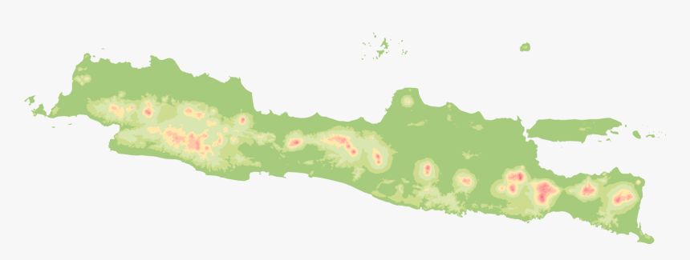
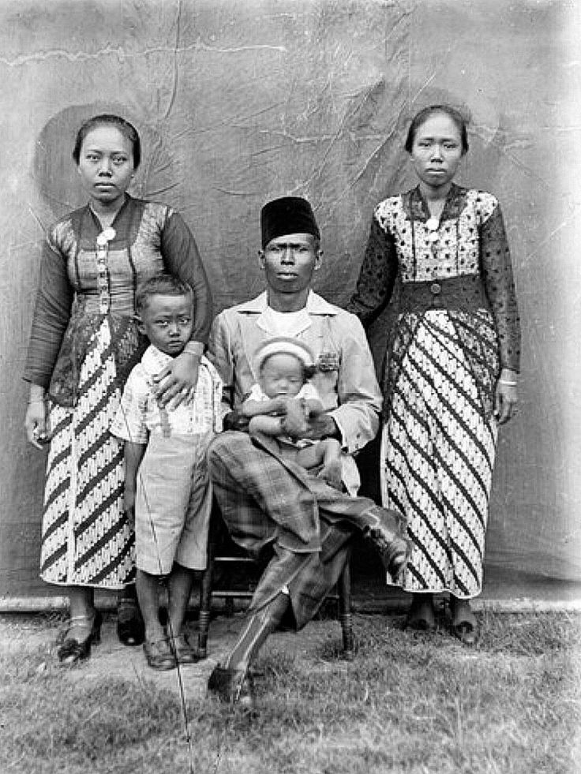
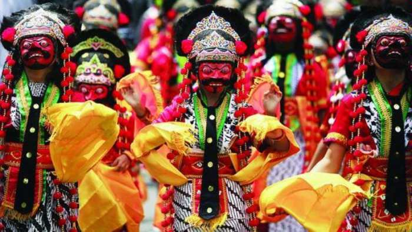
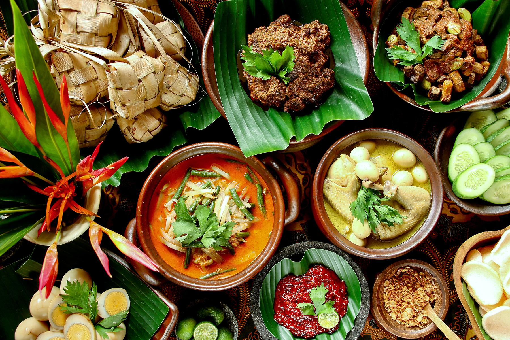
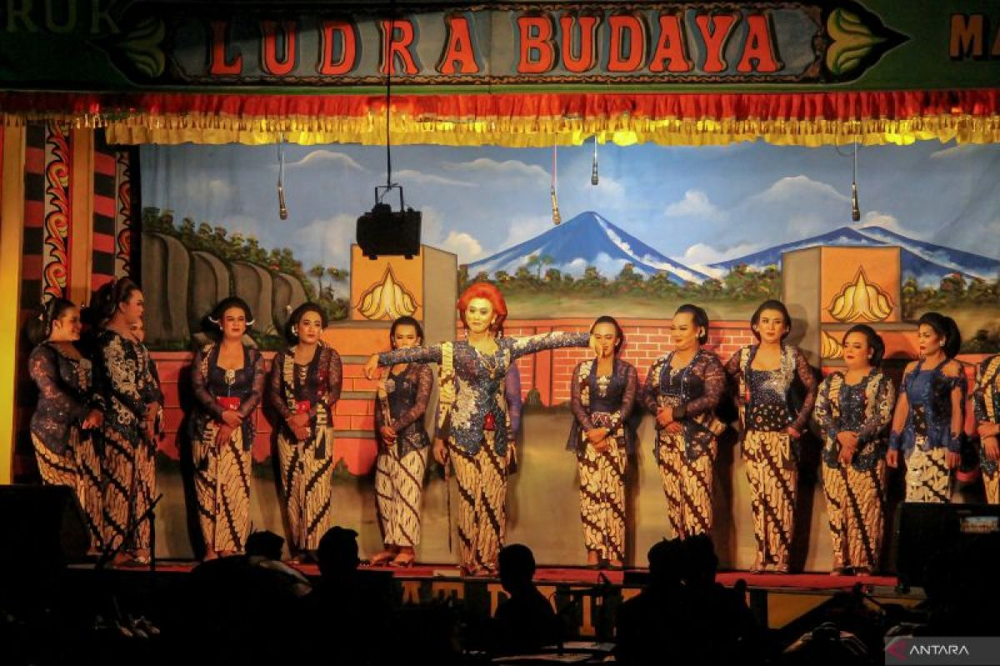
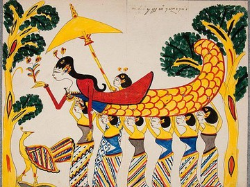
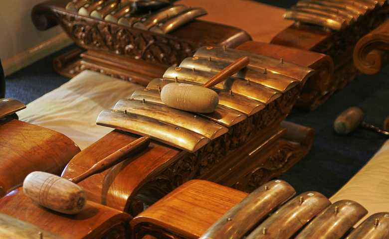

Cultural Map of Java
Explore historical landmarks and cultural sites across the island

Explore Our Heritage
Choose a topic and discover the richness of Javanese culture







About This Project
This website is dedicated to preserving and sharing the rich cultural heritage of Java. Through stories, images, and interactive experiences, we invite you to explore the traditions that have shaped Indonesian identity for centuries.
Our mission is to keep these timeless traditions alive for future generations while making them accessible to the world.
© 2025 Kelompok 12
 View on GitHub
View on GitHub